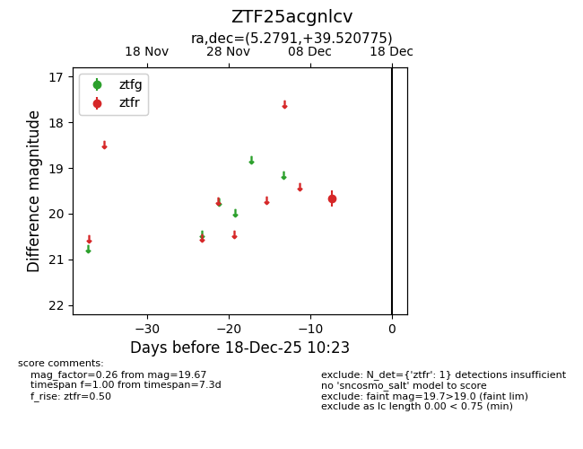
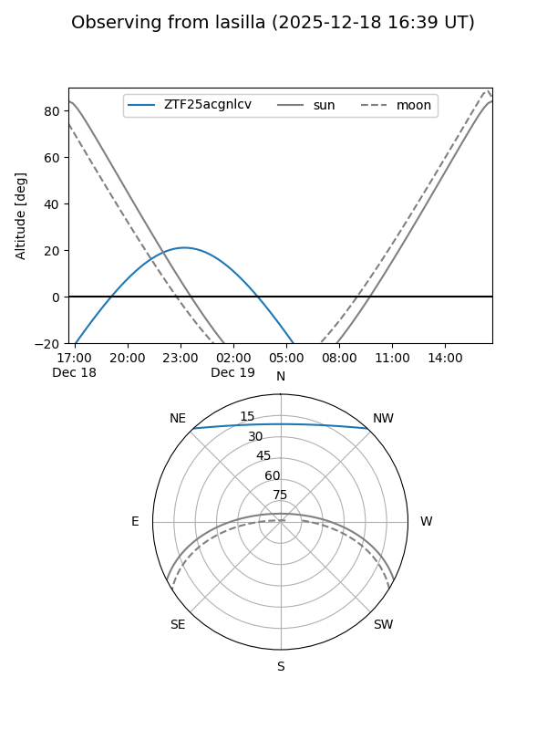
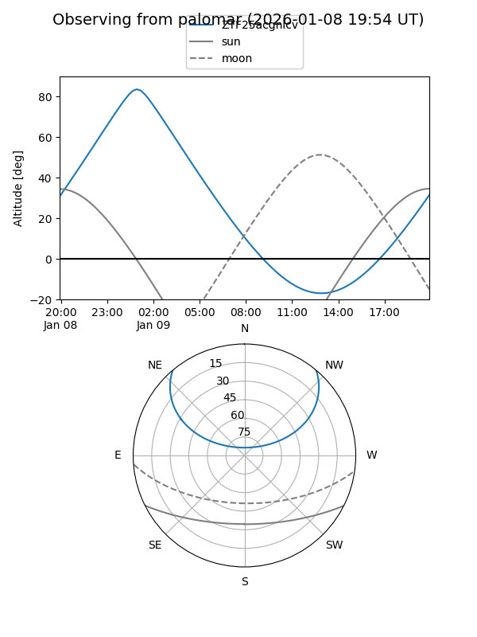

ZTF25acgnlcv
Target ZTF25acgnlcv at 2025-12-31 16:59
Aliases and brokers:
FINK:
Lasair:
ALeRCE:
alt names
ZTF25acgnlcv (ztf,fink_ztf)
Coordinates:
equatorial (ra, dec) = 5.2791,+39.52077
equatorial (HMS+DMS) = 00:21:06.98,+39:31:14.79
galactic (l, b) = (116.5861,-22.97707)
Flags:
Photometry:
last ztfr=19.67
1 ztfr detections
Lightcurve

Visibility


Additional plots